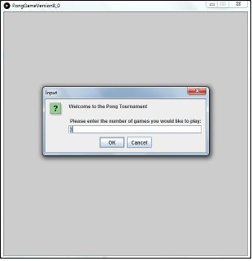
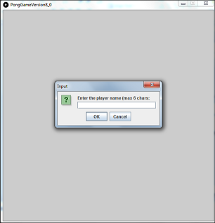
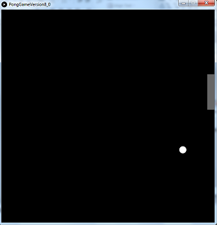
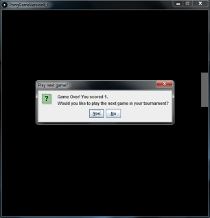
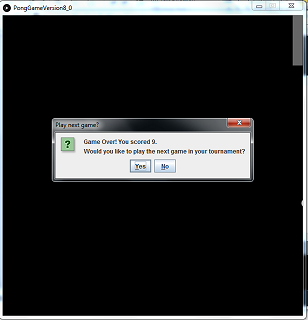
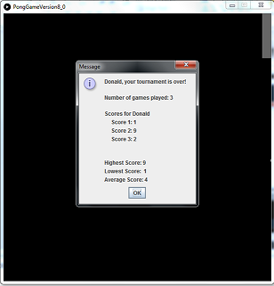
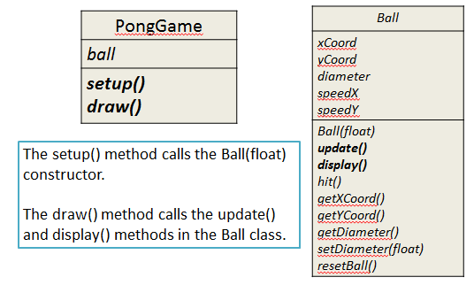
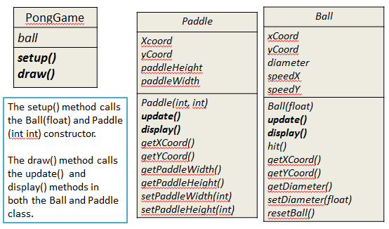

Objectives
Game of Pong Architecture · Solutions for all versions · PongGame V1.0 - V5.0
The Game of Pong
In this section, we wil introduce the Game of Pong that we will build over the next few labs.
Tournament
In our version of Pong, the player enters into a tournament of games.
The player decides how many games of Pong they would like to play in their tournament:

Player name
The player enters their name (if more than 6 characters are entered, Pong will truncate the String):

Playing the Game
When the ball is hit by the paddle, the score is increased by 1.
When the paddle misses the ball, a life is lost.
There are three lives in a game.

When a game ends and there are more games left to play in the tournament:
The score is displayed.
The player is asked if they want to continue with the tournament.

If the player wishes to continue:
Their game score is stored in an array.
A new game is started (the variables storing the number of lives and score is reset to zero).
Player is shown their score and asked again if they wish to continue.

If they choose yes:
Their score is stored in an array.
A new game is started.
Ending the Game
When a game ends and there are NO more games left to play in the tournament:
The player name and score is displayed for each game in the tournament.
The tournament statistics are also displayed (highest score, lowest score and average score).

Architecture of Pong
In the final version (V8.0) of Pong, there are four classes:
PongGame - has the setup() and draw() methods. It starts the game, handles player input, manages collision detection between the Ball and the Paddle, ends the game and outputs the player statistics.
Ball - controls the location, size and speed of the ball. This class updates the ball and displays it at the updated location.
Paddle - controls the location and size of the paddle. This class updates the paddle location and displays it at the updated location.
Player - stores the player name and the score for each game in the tournament (in an array). It calculates the statistics for the games in the tournament.

Versions of Pong
We will incrementally build versions of the game and finish with Game of Pong V8.0.
The 8 versions are:
Game of Pong V1.0 (Ball class)
Game of Pong V2.0 (Paddle class)
Game of Pong V3.0 (Simple collision detection)
Game of Pong V4.0 (Lives lost, lives per game, score)
Game of Pong V5.0 (Tournament functionality)
Game of Pong V6.0 (Player class – array, no statistics)
Game of Pong V7.0 (Player class – array, with statistics)
Game of Pong V8.0 (JOptionPane for I/O)
There is an additional version that covers more advance collision using pythagorus theorem:
- Game of Pong V9.0 (Advanced collision detection)
The solutions for each of these versions can be downloaded from here.
PongGameV1.0
Having read the lecture on PongGameV1.0 we will now develop it.
Make sure that you read and understand the code below, while typing it into the Ball class. If you have any questions on any part of the code, make sure to ask your lecturer.

Ball class
Create a new Processing sketch called ''PongGameV1_0''.
Create a new tab and call it ''Ball''.
In the Ball class, add the instance fields:
public class Ball
{
private float xCoord; //x coordinate of the ball
private float yCoord; //y coordinate of the ball
private float diameter; //diameter of the ball
private float speedX; //speed along the x-axis
private float speedY; //speed along the y-axis
}Then add these getter methods:
public float getXCoord(){
return xCoord;
}
public float getYCoord(){
return yCoord;
}
public float getDiameter(){
return diameter;
}Followed by the setDiameter setter:
public void setDiameter(float diameter){
//The ball diameter must be between 20 and height/6 (inclusive)
if ((diameter >= 20) && (diameter <= height/6)){
this.diameter = diameter;
}
else {
// If an invalid diameter is passed as a parameter, a default of 20 is imposed.
// With this animation, if we do not supply a default value for the diameter,
// a ball may not be drawn on the display window. Important note: it is not
// always appropriate to provide a default value at sette) level; this will
//depend on your design.
this.diameter = 20;
}
}Now add this method that will display a white ball with no outline on the display window:
public void display(){
fill(255);
noStroke();
ellipse(xCoord, yCoord, diameter, diameter);
}Now add the resetBall private helper method:
private void resetBall(){
xCoord = 0;
yCoord = random(height);
speedX = random(3, 5);
speedY = random(-2, 2);
}NOTE: A private helper method is a method that is private to the class you are in i.e. you are not allowed to use it outside of the current class. The resetBall method is used by the Ball constructor and the update method.
Still in the ball class, add this constructor:
public Ball(float diameter){
setDiameter(diameter);
resetBall();
}Add a hit method that will change the ball direction when it hits the paddle and bump it back to the edge of the paddle.
public void hit(){
speedX = speedX * -1;
xCoord = xCoord + speedX;
}Finally add the following update method:
public boolean update(){
boolean lifeLost = false;
//update ball coordinates
xCoord = xCoord + speedX;
yCoord = yCoord + speedY;
//reset position if ball leaves the screen
if (xCoord > width + diameter/2){
resetBall();
lifeLost = true;
}
// If ball hits the left edge of the display
// window, change direction of xCoord
if (xCoord < diameter/2){
xCoord = diameter/2;
speedX = speedX * -1;
}
// If ball hits top or bottom of the display
// window, change direction of yCoord
if (yCoord > height - diameter/2){
yCoord = height - diameter/2;
speedY = speedY * -1;
}
else if (yCoord < diameter/2){
yCoord = diameter/2;
speedY = speedY * -1;
}
return lifeLost;
}Your ball class is complete. Save this code.
PongGameV1_0 class
Now that the Ball class is written, we will start to use it in the PongGameV1_0 main tab.
Return to the main tab and enter the following code:
Ball ball;
void setup(){
size(600,600);
noCursor();
//setting up the ball with hard-coded sizes.
ball = new Ball(20.0);
}
void draw(){
background(0);
//Update the ball position and display it.
ball.update();
ball.display();
}Test your code
Run your code.
You should now have a ball that traverses the screen left to right.
When the ball reaches the right hand side, it should disappear off screen and a new ball should appear in a random lcoation on the left hand side.
When a new ball appears, it should traverse the screen in a random trajectory at a random speed.
Make sure you understand the code before moving onto PongGameV2_0.
Solution
If your code is not working, the solution can be found here.
PongGameV2.0
Having read the lecture on PongGameV2.0 we will now develop it.
Make sure that you read and understand the code below, while typing it into the Paddle class. If you have any questions on any part of the code, make sure to ask your lecturer.

Paddle class
Open your solution to ''PongGameV1_0''.
Save it as ''PongGameV2_0''
Create a new tab and call it ''Paddle''.
In the Paddle class, add the instance fields:
public class Paddle
{
private int xCoord; // X coordinate of the paddle
private int yCoord; // Y coordinate of the paddle
private int paddleWidth; // width of the paddle
private int paddleHeight; // height of the paddle
}Then add these getter methods:
public int getXCoord(){
return xCoord;
}
public int getYCoord(){
return yCoord;
}
public int getPaddleWidth(){
return paddleWidth;
}
public int getPaddleHeight(){
return paddleHeight;
}Followed by the setPaddleWidth setter:
public void setPaddleWidth(int paddleWidth){
//The paddle width must be between 10 and
//width/2 (inclusive)
if ((paddleWidth >= 20) && (paddleWidth <= width/2)){
this.paddleWidth = paddleWidth;
}
else{
// If an invalid width is passed as a parameter, a default
// width of 20 is imposed. With this animation, if we do
// not supply a default value for the width, a paddle
//may not be drawn on the display window. Important
// note: it is not always appropriate to provide a default
// value at setter level; this will depend on your
//design.
this.paddleWidth = 20;
}
}Followed by the setPaddleHeight setter:
public void setPaddleHeight(int paddleHeight){
//The paddle height must be between 50
//and height/2 (inclusive)
if ((paddleHeight >= 50) && (paddleHeight <= height/2)){
this.paddleHeight = paddleHeight;
}
else{
// If an invalid height is passed as a parameter, a default
// height of 50 is imposed. With this animation, if we do
// not supply a default value for the height, a paddle
// may not be drawn on the display window. Important
// note: it is not always appropriate to provide a default
// value at setter level; this will depend on your design.
this.paddleHeight = 50;
}
}Now add this constructor:
public Paddle(int paddleWidth, int paddleHeight)
{
setPaddleWidth(paddleWidth);
setPaddleHeight(paddleHeight);
// the xCoordinate variable is set here and it stays
// this value for duration of the program.
xCoord = width - this.paddleWidth;
// the yCoordinate variable is set here and changes
// later in the program as the mouse moves on the
// vertical plane.
yCoord = height/2;
}Add this method that will display a gray paddle with no outline on the display window:
public void display(){
fill(102);
noStroke();
rect(xCoord, yCoord, paddleWidth, paddleHeight);
}Finally add the following update method:
public void update()
{
yCoord = mouseY - paddleHeight/2;
//Reset yCoord if it’s outside the window coordinates.
if (yCoord < 0){
yCoord = 0;
}
if (yCoord > (height - paddleHeight)){
yCoord = height - paddleHeight;
}
}Your Paddle class is complete. Save this code.
PongGameV2_0 class
The code from your PongGameV1_0 class should be in your PongGameV2_0 class/main tab.
The following methods currently perform this processing:
setup() sets up the size of the window, switches off the cursor and creates a new Ball object
draw() repeatedly updates the ball location on the screen (based on speedX and speedY) and redisplays it.
Update this code so that a Paddle object is created in the setup() method. To the Paddle constructor, pass in 20 as the width and 100 as the height. Also update the draw() method to include this code:
paddle.update(); //Update the paddle location in line with the cursor
paddle.display(); //Draw the paddle in this new locationTest your code
Run your code.
The ball functionality should not have been affected. It still should:
traverse the screen left to right.
when it reaches the right hand side, disappear off screen and a new ball should appear in a random lcoation on the left hand side.
when re-appearing, traverse the screen in a random trajectory at a random speed.
A paddle should also now appear. It should be pinned to the right hand side of the window and should move on it's vertical plane in accordance with the movement of the mouse pointer.
As there is no collision detection built into the code, the paddle and ball ignore each other.
Make sure you understand the code before moving onto PongGameV3_0.
Solution
If your code is not working, the solution can be found here.
PongGameV3.0
On completion of this lab you should be very familiar with the game of pong and have included collision detection code for the Ball and Paddle class. You should see the game evolve through maintaining tournaments, lives lost and scores for the game. In this lab, you will work on PongGameV3.0, PongGameV4.0 and PongGameV5.0.
Having read the lecture on PongGameV3.0 we will now develop it.
This version of the game adds collision detection between the Ball and the Paddle.
Adding hitPaddle method
Open your solution to ''PongGameV2_0''. A copy of the V2 solution is here, if you need it.
Save it as ''PongGameV3_0''
In the PongGameV3_0 class/main tab, add the following hitPaddle method:
//method returns true if the ball and paddle overlap (i.e. ball is hit), false otherwise.
boolean hitPaddle(Paddle paddle, Ball ball)
{
//These variables measure the magnitude of the gap between the paddle and the ball.
float circleDistanceX = abs(ball.getXCoord() - paddle.getXCoord());
float circleDistanceY = abs(ball.getYCoord() - paddle.getYCoord() - paddle.getPaddleHeight()/2);
//The Ball is too far away from the Paddle on the X axis to have a collision, so abandon collision detection
if (circleDistanceX > (ball.getDiameter()/2)) {
return false;
}
//The Ball is too far away from the Paddle on the Y axis to have a collision, so abandon collision detection
if (circleDistanceY > (paddle.getPaddleHeight()/2 + ball.getDiameter()/2)) {
return false;
}
//We have a collision!
return true;
}Using the hitPadde method
In the draw method, after the ball.display() method call, insert the following code:
//Set variable to true if ball and paddle are overlapping, false if not
boolean collision = hitPaddle(paddle, ball);
if (collision == true){
ball.hit(); //the ball is hit i.e. reverses direction.
}Test your code
Run your code.
The ball functionality should not have been affected. It still should:
traverse the screen left to right.
when it reaches the right hand side, disappear off screen and a new ball should appear in a random lcoation on the left hand side.
when re-appearing, traverse the screen in a random trajectory at a random speed.
The paddle functionality should not have been affected. It should still:
be pinned to the right hand side of the window
move on it's vertical plane in accordance with the movement of the mouse pointer.
You should now have collision detection built into the code. Test that the paddle now hits the ball when they touch.
Solution
If your code is not working, the solution can be found here.
PongGameV4.0
Having read the lecture on PongGameV4.0 we will now develop it.
Make sure that you read and understand the code below, while typing it into the relevant class. If you have any questions on any part of the code, make sure to ask your lecturer.
Adding game information
In this version, we want to store the game information such as the number of lives lost, the maximum lives allowed per game and the score of the game. The game will end when the user loses the number of lives allowed per game.
Open your solution to ''PongGameV3_0''.
Save it as ''PongGameV4_0''
In the PongGameV4_0 class, add the following global variables to store the game information:
//Current game data
int livesLost = 0; //keeps track of number of lives lost in current game
int score = 0; //high score of the current game
int maxLivesPerGame = 3; //maximum number of lives that can be lost
//before the game endsIn the draw() method, change the call to the ball.update() method to be:
// Update the ball position. If true is returned, the ball has left the display
// window i.e. a life is lost
if (ball.update() == true){
livesLost++;
println("Lives lost: " + livesLost);
}In the draw() method, replace this version 3.0 code:
//VERSION 3.0 code.
//Draw the ball at its new location and check for a collision with the paddle
ball.display();
//Set variable to true if ball and paddle are overlapping, false if not
boolean collision = hitPaddle(paddle, ball);
if (collision == true){
ball.hit(); //the ball is hit i.e. reverses direction.
}with the version 4.0 code:
//If the player still has a life left in the current game,
//draw the ball at its new location and check for a collision with the paddle
if (livesLost < maxLivesPerGame){
ball.display();
//Set variable to true if ball and paddle are overlapping, false if not
boolean collision = hitPaddle(paddle, ball);
if (collision == true){
ball.hit(); //the ball is hit i.e. reverses direction.
score++; //increase score in the current game by 1, if the player hit the ball.
println("Score: " + score);
}
}
//The player has no lives left so the game ends
else{
println("Game Over!");
println("You have lost all of your lives: " + livesLost);
println("Your final score is: " + score);
exit();
}Test your code
Run your code.
Your output should be similar to this:
Make sure you understand the code before moving onto PongGameV5_0.
Solution
If your code is not working, the solution can be found here.
PongGameV5.0
Having read the lecture on PongGameV5.0 we will now develop it.
Make sure that you read and understand the code below, while typing it into the relevant class. If you have any questions on any part of the code, make sure to ask your lecturer.
Adding tournament information
In this version, we want to store the tournament information such as the number of games in a tournament and the number of games played so far in the tournament.
Open your solution to ''PongGameV4_0''.
Save it as ''PongGameV5_0''
In the PongGameV5_0 class, add the following global variables to store the tournament information:
//Tournament data
int maxNumberOfGames = 5; //maximum number of games in a tournament
int numberOfGamesPlayed = 0; //num of games played, so far, in a tournamentIn the draw() method, replace the ''else'' portion relating to this if statement:
if (livesLost < maxLivesPerGame){with this code:
//The player has no lives left so the game ends
else{
numberOfGamesPlayed++;
//If the player has more games left in the tournament,
//display their score and ask them if they want to continue with tournament.
if (numberOfGamesPlayed < maxNumberOfGames){
resetGame();
}
else{
//the player has no more games left in the tournament
tournamentOver();
}
}The resetGame() method
In the PongGameV5_0 class, add this new method:
// This method prepares for the next game by resetting the variables
// that store the current game information.
void resetGame()
{
println("Game Over!");
println("Starting a new game...");
livesLost = 0; //resets the lives lost in the current game to zero
score = 0; //resets the score of the current game to zero
}The tournamentOver() method
In the PongGameV5_0 class, add this new method:
// This method displays the player information, before exiting the program.
void tournamentOver()
{
println("Game Over!");
println("Tournament Over!");
exit();
}Test your code
Run your code.
Your output should be similar to this:
Make sure you understand the code before moving onto PongGameV6_0.
Solution
If your code is not working, the solution can be found here.